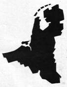

> nieuwsbrief
> 30e jg - 1e trimester
2012
| Bijdragen over: | Tip |
Hernieuwen
ledenbijdrage 2012
We worden elk jaar opnieuw rond de
jaarwisseling geconfronteerd met de uiteraard weer eens naar boven
aangepaste posttarieven. Deze uitgaven, voor de driemaandelijkse Nieuwsbrief Zannekin
en voor het Jaarboek De Nederlanden
extra muros slaan telkens weer een aanzienlijke bres in onze
begroting.
Na jarenlang de ledenbijdrage behouden te hebben op 25 zien we ons
thans
verplicht de basisbijdrage op te trekken tot 29 . Vanaf 35
wordt u
als steunend lid geboekt. Wie lid is van bvb het Davidsfonds kan
vergelijken en
vaststellen dat onze aangepaste ledenbijdrage parallel loopt met qua
omvang
gelijkwaardige uitgaven uit dat fonds. We laten daarbij wel commerciële
foefjes
achterwege: het is dus niet 29,95 ; wel 29 rond. Waarbij we er als
in het
verleden op hopen dat onze leden hun bijdrage spontaan naar boven
afronden.
In de bijdrage is als vanouds het abonnement op onze Nieuwsbrief
Zannekin en
op het al 34e Jaarboek De
Nederlanden extra muros begrepen. Bijliggend
betaalformulier
kan u daarbij dienstig zijn.
Een nieuw lid maken?
Ons
secretariaat helpt u graag!
U
bezorgt
ons naam en adres van een vriend of kennis en
wij
sturen
met uw groeten:
·
Onze
kennismakingsfolder
·
Een
exemplaar van onze jongste Nieuwsbrief Zannekin
·
Een
begeleidende brief.
Doen!
Met
onze hartelijke dank voor uw gewaardeerde medewerking.
Indien
de
bestemmeling effectief tot lidmaatschap besluit, dan ontvangen zowel u
als
hij/zij, respectievelijk bij wijze van dank en welkom, een exemplaar
van onze
uitgave
·
Pevelenberg
1304 Mons-en-Pévèle, 80 paginas
Auf Entdeckungsreise zu den flandrischen Wurzeln
von Rainer
Schultz
Neugierig waren sie alle, die 40
Teilnehmer des Vereins Fläming-Flandern
und des Naturparks Fläming, die auf Einladung vom Verein Forum van
Vlaamse
vrouwen (Martien Bode) und
Hartelijk welkom lautete die
Begrüßung von Martien Bode und Gudrun
Crassaerts, die Vorsitzende der flandrischen Frauenvereinigung,
gerichtet
an die Fläminger aus Wittenberg, Zerbst und Dessau. Mit einem typisch
flandrischen Musikprogramm sprang rasch der Funken über.
Die Schlachtfelder von Flandern
Nicht immer gab es diese
Lockerheit im Umgang beider Völker. Noch immer
erinnern Soldatenfriedhöfe in der Umgebung von Ypern an das größte
Schlachtfeld
des 1. Weltkriegs. 500 000 Soldaten fanden hier den Tod. Die über vier
Jahre
unter Dauerbeschuss stehende einstmals blühende Stadt Ypern wurde fast
vollständig zerstört. Wie ein Wunder bauten die Einwohner in Respekt
für die
Vergangenheit ihre Stadt schöner, denn je wieder auf. Prachtvolle
Gotik- und
Renaissancebauten prägen heute das Stadtbild. Yperns. Last Post
(Zapfenstreich) heißt ein täglich 20.00 Uhr wiederkehrendes
Zeremoniell, dass
die Erinnerung an die vielen Opfer lebendig hält. Von britischen
Dudelsackspielern und einer flandrischen Blaskapelle intoniert erklingt
das
bekannte Amazing grace. Ein emotionales Ereignis, das bei allen
Besuchern ein
Gänsehautgefühl erzeugt.
Mein Großvater lag hier in den
Schützengräben und kämpfte gegen die
Deutschen, wusste
Luthers Hochzeit und Breughel
Wer kennt es nicht das Motiv von
tanzenden Bauern auf Plakat und
Programmheft von Luthers
Hochzeit.
Ulrich Höhne (Vorsitzender Verein
Fläming-Flandern) und Elke Ciciewski
(Naturpark Fläming) zeigten sich sehr angetan von der Vielfalt
Flanderns. Jan Weyers, Vorsitzender des
Koninklijke Piet Stautkring), einem Kunst-verein aus Beveren, und
Mitglied der
Orde van den Prince Heerlykheid Bevere, versprach demnächst wieder
nach
Wittenberg zu kommen. Derzeit gibt es eine Ausstellung im Wittenberger
Alten
Rathaus von flandrischen Künstlern zu sehen, was wiederum als ein
Ergebnis der
jahrelangen freundschaftlichen Kontakte zwischen Flämingern und Flamen
zu
werten ist. Der Sprachwissenschaftler und Historiker
André Vanackere woont alleen in en fraai
gelegen
chalet in Maizeret, niet ver van de oevers van de Maas. Namen ligt
amper acht
kilometer verder. Marche)les Dames met de rots waar Koning Albert I
de dood
vond is vlakbij. Aan de voorgevel hangt een bordje met Nid
dmauvis, wat Waals is voor meerlaannest.
Streuvels
en
Claus
Wanneer André ons binnenin verwelkomt,
komen we
terecht in een gezellige wanorde met overal boeken. En dat blijkt nog
maar
een begin. Een aantal uren later troont hij ons mee naar zijn
boekenkelder. We
geloven onze ogen niet: misschien wel duizenden boeken staan er in
rekken of
liggen op stapels, van Streuvels tot Djoos Utendoale, van Timmermans
tot Claus
En dan zijn 230 woordenboeken! Ik heb Italiaans en Spaans geleerd en
Lëtzeburgisch (Luxemburgs). Ik heb ook het Frans-Vlaams Woordenboek van
Hij haalt het stamboomboek van de familie
Van Ackere
boven: Wij behoren tot de Gullegemse tak, net zoals de familie van
minister
Steven Vanackere. Ook Hugo Verriest was familie, zijn moeder was een
Vanackere. In de woonkamer prijkt een groot schilderij met het
familiewapenschild (waarop drie merels ofte meerlaans).
Kasteelhoeve
Als West-Vlamingen in Wallonië verzeilen,
heeft dat
nogal vaak met de boerenstiel te maken en dat is bij de Vanackers niet
anders
geweest. We schrijven 1954 wanneer twee broers van Kachtem naar het
Naamse
trekken.
Wij wippen even binnen bij broer Arthur,
die het
vervolg vertelt van het familieverhaal. Ik kwam naar hier met mn
oudste broer
Hendrik. Ik wilde uit de Vlaanders weg omdat ik niet graag in het
vlas
werkte. Maar Hendrik kon hier niet aarden en na drie dagen was hij weer
weg.
Hij werd afgelost door broer Frans, maar die is nadien naar Henegouwen
getrokken. Ik bleef achter en alleen was dat niet te doen. Zo besloten
mijn
ouders ook over te komen. Ik ben dan getrouwd en na verloop van tijd
konden we
de kasteelhoeve kopen. We hebben het wel zwaar gehad
Vandaag is Bossimé deels boerderij, deels
vakantiehuis. En onlangs heeft kleinzoon Ludovic Vanackere er zijn
gastronomisch restaurant geopend: Atelier
Bossimé.
Late
roeping
Intussen vertelt André hoe hij zelf niet
boer
ook in Namen belandde, als de boekenwurm van de familie. Ik wilde
studeren en
trok naar het college van Izegem, in de Latijnse humaniora. Maar ik had
een
flauw geheugen. Op de koop toe werd ik ziek en moest ik mijn studies
stopzetten. Mijn broer zat ondertussen in Wallonië, in ben bij hem gaan
inwonen
tot hij trouwde. Toen ben ik bij de late roepingen ingetreden bij Don
Bosco te
Kortrijk. Ook dat ging niet en zo ben ik dan rond 1961 hier in het
Walenland
melkboer geworden. Ik verkocht ook kaas en aardappelen. Op mijn
camionette
stond Lacia, canades Vanackere. Lacia
is Waals voor melk, canadas zijn
aardappelen. Als enige handelaar met een Waals opschrift had ik
onmiddellijk
succes.
Na zon twintig jaar moest André zijn
melkronde
stopzetten: Last van de stofmijt. Van dan afwerd hij eerst echt een
boekenwurm. Alle mogelijke onderwerpen interesseren hem! Om zijn
leerhonger te
stillen trekt hij nu nog twee keer per week naar school: Latijn,
Grieks,
Duits
(
)
______________________
Bron:
Krant van
West-Vlaanderen, 15 april
2011.
Het kernprobleem van alle kern-theoretisch denken over geschiedenis
Willy Alenus,
Oostende
Deze geloofsbelijdenis van Jan ROMEIN, op
verzoek van
Jacob PRESSER, dateert van 1941, toen deze laatste in het door de
Duitse Zivilverwaltung bezette Nederland, om
veiligheidsredenen onder de schuilnaam B.W. SCHAPER moest publiceren.
1941, dat
is zeventig jaar geleden en uiteraard werd er tijdens die periode, d.i.
een
mensenleven lang, meer geschreven en gepubliceerd dan in de loop van de
duizenden
voorafgaande jaren, in feite sedert de uitvinding van het geschreven
woord.
Zwischen
Wahrheit und Dichtung
En weten wij nu zoveel meer dan ten tijde
van ROMEIN
en PRESSER? Uiteraard. Maar toch constateren alle beroeps- en
vrijetijdshistorici, ik spreek hier ook voor Zannekin
en dan letterlijk voor de Nederlanden en de Nederlanden
Extra Muros, dat vele collectieve, negentiende en twintigste eeuwse
misvattingen vandaag nog altijd springlevend zijn. En dit terwijl
ondertussen
ontelbare doctorale en streng-wetenschappelijke verhandelingen werden
gepubliceerd die bedoelde misvattingen al lang naar de prullenmand
hebben
verwezen. Edoch, vaak zonder resultaat.
In 1910 schreef Pierre LAROUSSE, Alsace- Lorraine, province de lEmpire dAllemagne.1 Amper vier jaar na de DREYFUSS-affaire
moet daar toch enige moed voor nodig zijn geweest. In 1945 gingen er in
Frankrijk nog stemmen op om SS-Brigadeführer
(generaal-majoor) Heinz
HARMEL, zijnde als Duitser geboren, op 29 JUNI
Over de tweede helft van de zestiende eeuw
in onze
contreien (15581612), las ik onlangs nog dat het hier ging om het
katholieke
zuiden en het protestantse noorden. Hoe diep moeten wij zuchten
wanneer wij
ons herinneren en er ook over schrijven dat de Opstand van de
gezamenlijke
Nederlanden is begonnen in Steenvoorde, zo diep in het zuiden van
Vlaanderen
dat het vandaag in Frankrijk ligt, als een van de spoils van het voor
Frankrijk zeer gunstige en voor ons zeer ongunstige Verdrag van Munster
(1648)
en zijn naweeën (van 1668 tot 1700).
Voor Noord-Nederland was het de Gouden Eeuw
(met de
hulp van de talloze geïmmigreerde Zuid-Nederlanders), maar voor
Zuid-Nederland
was die eeuw, ondanks Rubens en de Oostendse Compagnie, het ei zo na politieke einde van de Karolingische
vorstendommen (Vlaanderen, Brabant, Antwerpen, Henegouwen, Namen) die,
o.a. in
de veertiende en de vijftiende eeuw, op voet van gelijkheid militaire
en
diplomatie banden en betwistingen hadden met Engeland (bondgenoot),
Frankrijk
en de Duitse, keizerlijke confederatie van vorstendommen en
heerlijkheden.
Prendre leffet pour le cause (Jacques BAINVILLE)
De Franse historicus verduidelijkte zijn
vandaag
gerenommeerde en nog altijd succesvolle stelling met een schitterend
voorbeeld,
dat je in Frankrijk nog altijd kan uittesten. Wie ervan uit gaat, zoals
o.a.
Charles de Gaulle, dat Elzas-Lotharingen (ondanks de Frans- Duitse
oorlog van
1870-71 en de herovering, in 1945, door het AMERIKAANSE leger3
& 4
en de Franse Nederlanden (die koning Leopold II, in 1871, had kunnen
terugclaimen), altijd Frans zouden zijn geweest of geworden, die zegt, Il y avait là (ten tijde van J. Gaius
CAESAR), un bel espace, prédestiné à un
grand peuple. Il
deviendra ou devrait devenir, 2000 ans plus tard, lhexagone que le
monde nous
envie.
Het is hier niet de plaats om het Henri
PIRENNE- debat
nog maar eens op te starten. Toch wordt ook hem verweten, zeker in zijn
Histoire de Belgique (7 dln.,
19001932), pogingen te hebben ondernomen om aan te tonen hoe de
vorming van
het latere België al in de middeleeuwen was voorbereid. Er lag daar
een mooie
driehoek van zo een 30.000 km² groot (zonder Zeeuws-Vlaanderen, de
Franse
Nederlanden, Maastricht en Duitstalig Luxemburg). Daar moest toch
omstreeks
1830 het Koninkrijk der Belgen uit voort-komen. Et
Toch een merkwaardige voorspelling of
conclusie ter
zake het koninkrijk van Leopold I van Saksen-Coburg (1790-1865), d.i.
een
streng protestantse koning, - eerste taal Duits, tweede taal Engels,
met
voldoende kennis van het Frans, mede in gevolge zijn korte loopbaan
(1813-1815), als generaal in het Russische leger van de tsaar Alexander
I.
Onverwerkt
en verdraaid verleden
Van 1601 tot 1604 vocht Oostende, als
laatste
Zuid-Nederlandse stad die bij de Opstandelingen en bij Engeland wilde
zijn, een
onvoorstelbaar bloedige strijd tegen de Spaans-Habsburgse beroepslegers
van de
aartshertogen Albrecht en Isabella. Een hopeloze strijd, die alleen
door het
onover-brugbare Zwin kon worden tegenhouden. Maar voor de
opstandelingen gingen
alle Vlaamse kasselrijen bezuiden Sluis verloren. Het hedendaagse,
Zeeuwse
Retranchement (1604) herinnert aan die tot hier en niet verder.
In Oostende zou je dus een Jacob van der
Meer, een de
Hertaing, een Sir Francis Vere-straat, -laan of square verwachten.
Allen
waren Kommandeur en een korte tijd
gouverneur van de belegerde stad. Maar zoek niet naar een Geuzenstraat
in de
Stad aan Zee. Er is wel een Aartshertogenstraat! Geef ons dan maar
Hasselt met
zijn monument ter ere van de Brigands
van de Boerenkrijg. Limburg bleef dus gespaard van een
Sansculotten-straat.
Die hebben, ook in Limburg, geblazoende grafstenen vernield e.a.
monumenten,
aux prétentions nobiliaires. Maar Lummen (Limburg) doet nog beter dan Oostende. Geen Lumey-straat in
Lummen. Daarvoor moet je naar Den Haag of naar Rotterdam.
Gaan wij nog dichter naar het kernprobleem
van ROMEIN
of moeten wij het hebben over hineininterpretieren?
Of wij dat nu willen of niet, de geschiedenis die zou moeten worden
geschreven
met de onbemande camera, is voor het heersende Establishment
van alle tijden en in alle s heren landen, niet
alleen politiek-, maar vaak ook bijna stamboom-gebonden. Oranje- Nassau
is gereformeerd, Saksen-Coburg van het
Verenigd Koninkrijk is Anglicaan en
Saksen-Coburg van België is Rooms-
Katholiek. Kunnen deze drie koninkrijken een strenge scheiding van
Kerk en
Staat handhaven, zoals in Mexico of in Frankrijk?
Van koning Leopold I van Saksen-Coburg, de
eerste
koning der Belgen, krijg je 180 jaar na 1830 nog altijd niet vaak te
horen dat
de diplomatieke druk van zijn zus, prinses Louise-Victoria van
Saksen-Coburg
(in 1831) en die van haar dochter, koningin Victoria van Saksen-Coburg,
door
haar huwelijk met Albert van Saksen-Coburg (in 1839), de Nederlandse
diplomatie
en het Nederlandse leger heeft doen wijken. Niet De Stomme van
Portici en ook
niet het Franse leger des demi-soldes. 1830, dat is immers maar
vijftien jaar
na Waterloo. Ook na 1839 waren Antwerpen en Gent Orangist. De
Westerschelde
boven alles.
Legende
wordt officiële geschiedenis
Wat is in, naast of achter al die beelden
de
werkelijke geschiedenis (Jan ROMEIN)? Mag ik een voorbeeld aanhalen
uit mijn eigen
huisvlijt? Het gaat over het Duitse Herbststurm-tegenoffensief
in de Kempen (3-17/27 september 1944).6 Op 15 september
1994, voor
de vijftigste verjaardag, schreef ik, Nergens
wordt het Duitse tegenoffensief vermeld. Het wordt nog altijd dood
gezwegen.
Thierry VUYLSTEKE
besteedt één zin aan het gebeuren: De
Duitsers doen alsof ze achter het kanaal willen standhouden, waarmee
het
Albertkanaal bedoeld wordt. De vi
Deze versie is die
Wahrheit - zij werd nooit bekritiseerd - de officiële versie is
Dichtung.
History is about facts. Mijn research en recherche zijn gebaseerd op
de
oorlogsdagboeken van de toentertijdse vriend en vi
________________
Noten
1 Pierre LAROUSSE, Nouveau
Dictionnaire Illustré, Librairie Larousse, Paris, 1910, p.
851.
2 E.G. KRÄTSCHMER, Die
Ritterkreuzträger der Waffen-SS, Verlag K.W. SCHÜTZ KG, Preussisch
Oldendorf, 1982, pp. 426- 451.
3 Keith E.
BONN, When the Odds were Even (The Vosges
Mountains Campaign, October 1944 - January 1945), Presidio Press,
Novato,
CA (VS), 1994, 294 pp.
4 Volgens vele Franse
publicisten werd Elzas-Lotharingen
bevrijd door de Franse generaal Philippe-François-Marie de HAUTECLOQUE,
bijgenaamd LECLERC, die postuum tot maarschalk werd bevorderd.
5 Keith E. BONN, op.
cit. en Joachim LUDEWIG, Der deutsche
Rückzug aus Frankreich, Militärgeschichtlichen Forschungsamt,
Verlag
Rombach, Freiburg in Breisgau, 1995, 368 pp.
6 Thierry VUYLSTEKE (art.), Limburg, IN Henri BERNARD, Het
Geheim Leger (19401944), Gent, 1986.
Régis de Mol
Le changement de peuple, au
programme des deux grands partis jacobins et mondialistes qui se
partagent le
pouvoir en France va bon train. Si chacun peut lobserver à léchelle
nationale, le travail de génocide identitaire se produit également par
petites
touches, à léchelle locale, ainsi que le relate innocemment
En question, lépuration
linguistique qui se poursuit en Flandre. Après laf-faire du collège
Michel de
Swaen, «dont le nom ne disait plus rien à
la population de Petite Synthe» (on se souvient que le nom de notre
grand
poète flamand fut remplacé par celui de Lucie Aubrac), après la
campagne de
chtimisation à outrance orchestrée par
«Mardi au conseil de
Vieux-Berquin, les élus étaient amenés à se prononcer
sur le classement des voies communales et sur la modification du nom de
rues.
Ainsi et tout à fait officiellement, Vierschaere devient rue de Borre,
Gagelstraete rue de Pradelles, Swartenbrouck rue de l'Alger,
Meterbecque ou
Halm Straete, rue de Steenwerck. Certains élus ont légèrement regretté
que les anciennes
dénominations ne soient pas restées. D'un autre côté, on peut imaginer
la
difficulté des nouveaux habitants à prononcer jusqu'au nom de leur
rue
» (VdN
du 1er oct.2011).
Nous pourrions ironiser
facilement sur la «difficulté des
nouveaux habitants à prononcer SWARTENBROUK» et confirmer que«Rue
de
lAlger» ne posera aucun problème à lavenir! Mais pas dhumour
déplacé, la
patrouille rôde! Une fois de plus, comme à Petite Synthe, à Bergues et
ailleurs, les élus du peuple donnent une prime à lignorance et renient
tout
lhéritage culturel de leurs ancêtres. Du passé flamand, ils font table
rase.
Rappelons-leur quand même que le village de Vieux Berquin (Oud-Berkin
ou
Noord-Ber-kin), village natal de Jules Lemire, est bien en Flandre, sur
la
frontière linguistique et que le flamand y fut longtemps la langue
dusage. Les
toponymes donnés par nos ancêtres avaient une signification pratique et
se
transmettaient de génération en génération. Voici le sens de ces
toponymes
jetés à la poubelle par des inconscients:
VIERSCHAERE: tribunal des échevins ou
assemblée judiciaire qui tire son nom des quatre bancs occupés par le
représentant du Seigneur, par la loi, le demandeur et le défenseur.
GAGELSTRAETE: «gagel» est un nom de plante
présent dans de nombreux toponymes flamands,
hollandais et frisons. Il sagit dune espèce locale de myrte,
ou selon
dautre sources, du "fragon" ou petit houx. Il nest pas impossible
non plus quil sagisse dune déformation de «galgenstraete», ou «rue
du
gibet». En tout état de cause, il convenait de conserver
un toponyme de cette qualité!
SWARTENBROEK: littéralement «marais noir», la
couleur noire évoquant sans doute le lieu dune ancienne tourbière ou dun étang ayant subsisté après lenlèvement
de la tourbe (en flamand, tourbe se dit «veen»
signalons une ancienne
«veenstraete» à Rubrouck, quun idiot a traduit par
rue de Vénus!).
METERBECQUE: «meter» est peut-être le nom
dune plante, «meterne» (moyen
néerlandais), issu du latin «matrina» ou «chrysanthenum parthe-nium»,
(nos
ancêtres avaient une connaissance approfondie des plantes), mais plus
probablement le nom dun ruisseau, la «Meteren-beek», écrite sous la
forme
«Meterbecque» en 1644 (Karel De Flou) qui traverse la commune.
HALMSTRAETE: «halm», tige,
chaume, rue
du/des chaume/s.
Il convient de conserver les noms
anciens en létat et de ne pas les retoucher. Malheureusement, lorsque
ce ne
sont pas des amnésiques qui suppriment purement et simplement nos
toponymes, ce
sont des cuistres qui les rempla-cent par des traductions hasardeuses
voire
stupides. Un bel exemple:
Pour ceux qui en douteraient
encore, léradication de lidentité flamande se poursuit
méthodiquement,
cyniquement, dans lindifférence générale, notamment de celle des élus
qui
devraient être en première ligne pour la défendre.
Lactualité de ce mois doctobre
aura malheureusement été riche sur ce plan! Le vendredi 21 octobre, le
Conseil
Régional du Nord Pas de Calais se penchait sur une motion de soutien
aux
langues régionales (dont larabe et le berbère!) présentée par un élu
écologiste. La motion fut rejetée avec 28 voix pour et 60 contre, dont
les élus
socialistes. Ceux du FN la rejetèrent également au motif que cette
motion
confondait sciemment langues régionales et langues issues de
limmigration.
Les réactions des élus
socialistes sont proprement ahurissantes de totalitarisme et frisent le
racisme. Morceaux choisis: «Il nest pas
possible de donner de nouveau (SIC!) des droits à cette culture. Tu
comprends
avec lextrême droite
», «
la région ne doit pas financer le
folklore
», «Ce nest pas à la région de dire au ministère de
léducation nationale
ce quil doit enseigner». Quant à Michel Delebarre, le maire de
Dunkerque,
il ignore la différence entre le flamand et le néerlandais! Les émules
de
labbé Grégoire et des sans-culottes viennent dexprimer clairement
quils sont
hostiles à une partie de la région. Les Flamands sauront sen
souvenir et
appliquer la réciprocité!
«Les peuples ne meurent pas, ils
se suicident»
(A.Toynbee).
et il est des cas où on les suicide! Il en va de
Nous invitons les Flamands de
France à riposter auprès de leurs élus. Nous les appelons à la
vigilance
et à empêcher désormais par tous les
moyens quon touche à la mémoire de leurs ancêtres!
Nous les invitons à afficher de
façon ostentatoire leur identité flamande et leur emblème: le Lion des
Flandres.
Nous ne
disparaîtrons pas sans nous battre! Leve Vlaenderen!
Renaat van Beeck,
Berchem
(
)
Ik geef de schrijver van het cusrsiefje [die in een vorig nummer van t
Pallieterke vond dat het stilaan de goede kant uitgaat, nu bleek
dat in
Walloniië 40% te vinden zou zijn voor aanhechting bij Frankrijk] de
raad eens
een historische atlas van Europa te raadplegen. Dan zal hij zien hoe in
de loop
van de voorbije eeuwen de Franse grens steeds meer is opgeschoven naar
het oosten
(ten koste van het Duitse rijk) en naar het noorden (ten koste van de
Nederlanden), met als hoogtepunt de brutale agressie van Lodewijk de
Veertiende
die ons een stuk Vlaanderen (en een stuk Henegouwen en Luxemburg) heeft
afgepakt. Dat stuk van de Zuidelijke Nederlanden inmiddels totaal
verfranst
werd vervolgens geannexeerd door de Republiek en het keizerrijk.
Nog
in de twintigste eeuw heeft Frankrijk tweemaal geprobeerd een stuk
Duitsland
(het Saargebied) in de lijven.
Dat
de Vlamingen bereid zijn Frankrijk zomaar een gebied cadeau te doen dat
NOOIT
bij Frankrijk heeft behoord, waardoor de grens van dat land opschuift
tot het
eveneens zo goed als volledig verfranste Brussel, is mij een totaal
raadsel.
Dan
is de as Strasbourg (ooit het Duitstalige Strassburg), Luxembourg (het
ooit
Germaanstalige Luxemburg) en Bruxelles (het ooit Dietstalige Brussel)
helemaal
binnen bereik. Ik ben geen specialist in geopolitiek, maar dit scenario
vind ik
angstwekkend!
We
kunnen alleen maar hopen dat wanneer dit ooit ter sprake zou komen,
Duitsland
en Engeland zullen dwarsliggen.
___________________
Bron:
lezersbrief
in t Pallieterke, 10 augustus 2011.

Twee vliegen in één klap
Met dit kopje wil ik niet
gezegd hebben dat ik op het criminele pad terecht gekomen ben. Ik heb
ermee
willen aanduiden dat er in het kader van de grensoverschrijdende
contacten
tussen de Gelderse Achterhoek en het Westmunsterland op één en dezelfde
dag
twee bijeenkomsten hebben plaatsgevonden. Ze lagen in elkaars verlengde
en
konden op zaterdag 29 oktober 2011 dus in dezelfde plaats en zaal
gehouden
worden en wel in Rhede in het plaatselijke kerkelijke centrum.
Tijdens de ochtendbijeenkomst
werd de jaarlijkse dialectdag gehouden.
De eerste spreker was dr. Jan
Berns uit Amsterdam, maar geboortig uit Pannerden, gelegen op het z.g.
Gelders
Eiland. Hij had zijn bijdrage het opschrift Van
dorpsgenoot tot Rijksduitser van plat naar Engels meegegeven.
Voor wat
het eerste deel betreft is het een herinnering aan zijn jeugd. In zijn
geboortedorp woonden in 1940 een aantal Duitsers, dat na de bezetting
van
dorpsgenoten tot Rijksduitsers werden bevorderd. Hij wilde hiermee
onderstrepen dat deze Duitstalige dorpsgenoten er gewoon bijhoorden en
dat de
indringers werden beschouwd als vreemde Duitsers. Met betrekking tot
de
huidige situatie van het dialect merkte hij op dat de emancipatie van
de
dialectsprekende de grootste verandering is. Gaven vroeger de
dorpsnotabelen
antwoorden op onderzoeken, vandaag doet de dialectsprekende het zelf.
Vanaf 1970
kan gesproken worden van een renaissance van het dialect.
De middagbijeenkomst stond in
het teken van 50 jaar viering Stichting
Achterhoek-Westmunsterland. Op 14 november 1961 had er (ook) in
Rhede een
ontmoeting plaats tussen aan aantal Achterhoekse en Westmunsterse
journalisten.
Ze vonden dat men, aldus Henk Krosenbrink, niet eeuwig kon blijven
haten.
Besloten werd een Werkgroep Culturele Grenscontacten op te richten. Met
ondersteuning van de Kulturkreis Schloss Raesfeld werd een groot aantal
activiteiten ontwikkeld zoals historische symposia,
kunsttentoonstellingen,
excursies, dialectdagen en midwinteravonden. Ze hebben in belangrijke
mate
bijgedragen aan de verbetering van de onderlinge verstandhouding, zowel
met
betrekking tot de nabuurschap als op het bestuurlijke vlak.
Omdat men besefte dat er blijvend
aan een goede relatie met de buren moet worden gewerkt was een
discussiebijeenkomst ingericht waaraan werd deelgenomen door een
zevental
prominenten uit de regio. De leiding van het gesprek was in handen van
de
voormalige Euregio-president Frans Willeme. Door meerdere leden van het
panel
werd uitgesproken dat het moet klikken in de contacten en dat
vriendschapsbanden in dit verband zeer belangrijk zijn; dan heeft men
wederzijds begrip voor elkaar. Ook moet men niet bij het verleden
blijven
stilstaan; de jonge generatie heeft namelijk afgerekend met 1939-1945.
Dit feit
moet een aansporing zijn om de jeugd te betrekken bij de
grensoverschrijdende
activiteiten temeer omdat de open grens voor hen een
vanzelfsprekendheid is. In
dit verband werd erop gewezen dat de eerste vreemde taal die van het
buurland
zou moeten zijn. Dit kan ertoe leiden dat de persoonlijke contacten
uitgebreid
worden.
Afsluitend werd de panelleden
de vraag voorgelegd hoe het naar hun mening over 50 jaar gesteld zou
zijn met
de grensoverschrijdende samenwerking in deze regio. Samenvattend kwam
hun
reactie er op neer dat de toenemende europeanisering zal leiden tot
intensivering van de regionale contacten. Als belangrijk werd gewezen
op de overdracht
van de geschiedenis van de eigen streek aan de jonge generatie. Daartoe
zullen
door de handen ineen te slaan nieuwe wegen ingeslagen moeten worden.
Eén van de panelleden merkte
veelzeggend op dat we naar elkaar moeten blijven kijken. Bedoeld zal
niet
zijn in de zin van ik laat nogmaals een paar vliegen neerstrijken
elkaar
vliegen af te vangen; dat zou van wantrouwen getuigen. Wil de
grensoverschrijdende samenwerking versterkt worden dan is dat alleen
mogelijk in
een sfeer van vertrouwen in elkaars bedoelingen in de wetenschap
gezamenlijk
verantwoordelijk te zijn voor het welslagen. Gezien tegen deze
achtergrond was
het goed om in Rhede te zijn. Het gedachtegoed dat daar is uitgesproken
geeft
de burger moed voor de komende jaren.
Nederlands
en Fries verankerd in de
Grondwet van het Koninkrijk der Nederlanden. Wanneer?
Het
gebruik van de Nederlandse taal wordt verankerd in de grondwet. Dat had
de
ministerraad begin februari 2010 besloten.
Het
kabinet wil daarmee zeker stellen dat het gebruik van het Nederlands
niet in de
verdrukking komt nu er in ons land steeds meer talen worden gesproken,
luidde
een persbericht van 12 februari 2010. Vooral het Engels wint terrein,
stelt
het kabinet vast. Dat komt omdat er steeds meer contacten zijn met het
buitenland en er meer buitenlanders hier komen wonen. Door de positie
van het
Nederlands in de grondwet vast te leggen, wordt zeker ge-steld dat
mensen in
Nederland altijd met de eigen taal uit de voeten kun-nen, klonk het
verder.
Ook
werd de positie van de Friese taal te berde gebracht en zou er een
bepaling in
de grondwet komen. Het wetsvoorstel, ging voor advies naar de Raad van
State.
In dit wetsvoorstel staat dat de overheid het gebruik van de
Nederlandse taal
als bestuurs-, cultuur- en omgangstaal wil bevorderen mits ze in de
grondwet
vast te leggen.
Het
was haast zon twee jaar geleden dat de toenmalige regeringspartijen
CDA en
ChristenUnie hierop aandrongen. Wie aan de kar duwde en nog steeds
duwt, is
voormalig Zannekin-bestuurslid
Erik Verbrugh. Ook zijn vader nam het als GPV-politicus meermaals op
voor de
Nederlandse taal.
Hopelijk
wordt het wetsvoorstel spoedig opnieuw behandeld.
Veel
Afrikaners en Afrikaanstaligen zijn
afstammelingen van Nederlan-ders extra muros
Marie
de
Ook
uit de Duitse gebieden trokken hele gezinnen naar de Kaap. Namen als
Krüger, de
leider van de Boerenopstand, Herzog, Treurnicht e.a. zijn ruim
verspreid aan de
zuidelijkste punt van Afrika. Samen met andere Neder-landse kolonisten
zochten
zij een toekomst onder het Zuiderkruis.
Motie
over Zuid-Afrika
in Nederlandse Tweede Kamer
De
43-jarige Kees van der Staaij van de Staatkundige Gereformeerde Partij
(SGP)
diende op donderdag 24 november
Hier
volgt de tekst van deze motie:
Constaterende,
dat Zuid-Afrika kampt met hardnekkige vormen van discri-minatie en vele
ernstige geweldsmisdrijven, waaronder racistisch geweld, mede jegens
Afrikaners, maar ook grote zorgen bestaan over elementaire
grondrechten, zoals
de persvrijheid;
Overwegende,
dat Nederland in het verleden de Zuid-Afrikaanse overheid met
juridische kennis
en expertise heeft bijgestaan ten aanzien van de be-scherming van
mensenrechten, het tegengaan van geweld en discriminatie, alsmede het
respecteren van grondrechten;
Verzoekt
de regering te bezien hoe Nederland en waar mogelijk de EU op het
gebied van
onder meer preventie, opsporing, justitiële ondersteuning en expertise
een
bijdrage kunnen verlenen aan het bestrijden van discriminatie en
(racistische)
geweldsmisdrijven, mede jegens de Afrikaners, en tevens kunnen
bijdragen aan
het borgen van grondrechten, zoals de persvrijheid, in Zuid-Afrika.
Het
resultaat van de stemming mag als opmerkelijk worden beschouwd. Velen
hadden
zich aan een links-rechts-confrontatie verwacht maar het pakte helemaal
anders
uit. In het kamp van de 68 pro-stemmers vinden we de volgende partijen:
SGP,
ChristenUnie, Partij voor de Vrijheid (PVV), GroenLinks, D66, SP en
Partij voor
de Dieren. De 80 tegenstemmen kwamen van de volgende partijen: PvdA,
CDA en VVD
met in totaal 80 zetels. VVD-minister Uri Rosenthal had de motie
nochtans
omhelst.
Wordt
beslist vervolgd
..
Wegens
plaatsgebrek verschijnen berichten over
Frans-Vlaanderen in de volgende Nieuwsbericht.
Aan
alle leden en sympathisanten wenst de Stichting Zannekin een
voorspoedig 2012
"De
Zavelberg" - Edouard Michielsstraat 51
B.
1180 UKKEL / Brussel
T.
00 32 485 630 227 E. leo.camerlynck@skynet.be